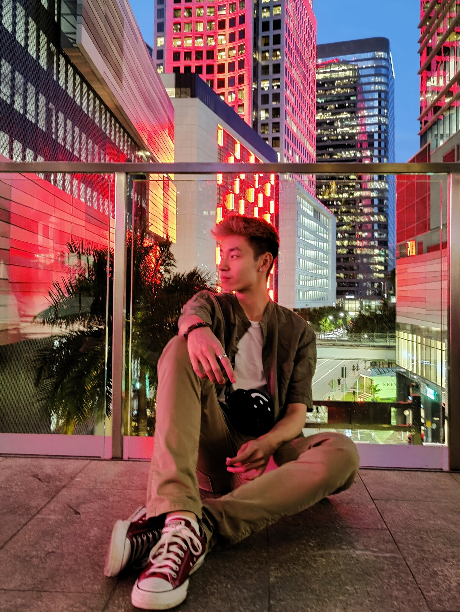

I'm Rosario Wong, a GTA-based art student, currently attending University of Toronto - Mississauga and Sheridan College. I’m double majoring in Art and Art History (A&AH) and Communications, Culture, and Information Technology (CCiT), with math as a minor.
I’ve always drawn a lot while growing up, but I never took it seriously and never would have thought about jumping headfirst into the arts as my career path. Throughout my youth. I’ve had many aspirations of who I wanted to become, some paths included becoming a chef, a baker, an architect, or a graphic designer—but I realized that art and teaching was really what I enjoyed. Now, I enjoy baking and cooking as a hobby in my spare time, as well as spending time being active (archery, volleyball, Ultimate frisbee) or hanging out with friends.
My artworks range from Photoshop edits to digital paintings to traditional mediums to print making. Showcasing my appreciation for those around me is a theme I gravitate towards, and can be found in my print media projects.
Web/UI/UX design has been a relatively newer interest that I have developed during my time within the CCiT program, and realized that I have developed a passion in this field.